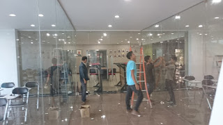
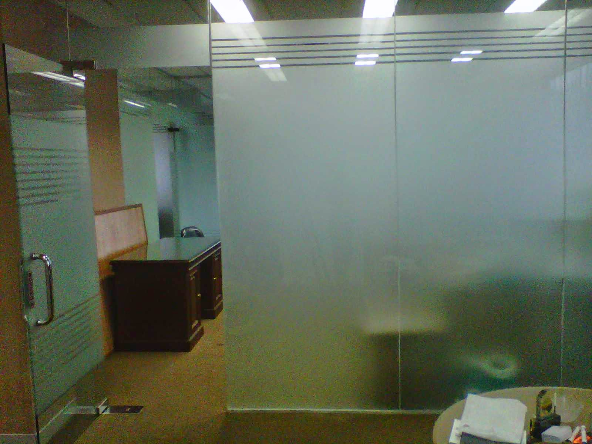

Kaca adalah salah satu material rumah yang pasti selalu ada, utamanya sebagai jendela. Namun, tidak cuma estetika melainkan juga keamanan bagi penghuni di dalamnya. Tidak halnya hadir berbagai material kaca dan juga lantai yang semakin melengkapi skor keindahan sebuah bangunan.
Macam-jenis kaca diantara lain kaca tempered Palangkaraya, kaca shower, railing kaca, kanopi kaca dan masih banyak lagi. Semua material tersebut dapat di aplikasikan harga sebuah hunian menonjol lebih cantik nyaman dan juga aman. Berikut ini sedikit penjelasan mengenai berjenis-jenis macam kaca dan fungsi kaca dan juga parket lantai kayu jati yang bisa anda dapatkan.
Jasa Pemasangan Kaca Tempered Palangkaraya

Tidak anda mebutuhkan jasa maintenance kaca, anda dapat mengunjungi dis.or.id. Masyarakat telah mengerti keunggulan dari kaca ini. Maka dari itu, mereka telah mulai menyenangi ragam kaca yang satu ini. Kecuali sembarang tukang juga dapat melakukan progres pemotongan ini. Tapi dulu hanya gedung perkantoran atau sentra perbelanjaan modern saja yang memakai variasi kaca ini, sekarang rumah hunian juga telah dibangun dengan kaca tempered Palangkaraya. Kecuali ini tidak lain karena semakin banyak orang yang memahami kualitas serta keunggulan dari kaca tempered Palangkaraya ini.
Jika itu, bermacam komponen properti akan kian menarik sekiranya dibuat dari kaca tempered Palangkaraya seperti kanopi, pintu, kamar mandi, dan balkon.
Dengan mangunjungi dis.or.id, anda dapat menerima dan memanfaatkan jasa kaca tempered Palangkaraya yang pantas dengan kemauan anda. Tidak anda tertarik untuk memasang kaca temeperd, anda hanya tinggal mengunjungi web dis.or.id. Disana anda dapat memanfaatkan jasa pemasangan kaca tempered Palangkaraya untuk segala tipe bidang maupun bangunan. Tidak saat ini anda sedang ingin membangun suatu bangunan atau gedung, anda dapat memanfaatkan kaca tempered Palangkaraya untuk diaplikasikan lantas ke segala tipe bidang. Dis.or.id menawarkan jasa pemasangan kaca tempered Palangkaraya karena kami memiliki alat yang lengkap. Lebih dari itu, dis.or.id sudah menyiapkan kekuatan spesialis yang siap untuk melakukan pemasangan, entah itu kaca tempered Palangkaraya untuk kanopi, pintu, partisi, balkon, dan lain sebagainya.
Info Pemesanan Selengkapnya
Google Maps: https://www.google.com/maps/d/u/0/viewer?mid=1wHa3dBFC0jOCBS2FtlNAYKtIEp5M6KyQ&ll=-7.27380280025364%2C112.65243155000007&z=18
Note: https://www.facebook.com/notes/distributor-of-industrial-supply/kontraktor-jasa-pemasangan-kaca-tempered/1785713878395158/
Event: https://www.facebook.com/events/260234754508702/
Portfolio Produk: https://www.facebook.com/1681607345472479/photos/?tab=album&album_id=1712631995703347
Distributor & Supplier Kaca Shower
Kaca shower yakni kotak atau alat yang berfungsi sebagai penyekat ruang khusus untuk kamar mandi. Salah satu sistem yang dapat diaplikasikan untuk mewujudkan kamar mandi yang senantiasa bersih adalah memakai shower karena cara pembersihannya memang jauh lebih praktis dibanding dengan yang menggunakan konsep bak mandi. Tak berkeinginan lebih sempurna lagi, kamar mandi yang menerapkan shower ini bisa dilengkapi dengan komponen lain adalah shower screen atau bisa disebut dengan kaca shower. Tentunya banyak kelebihan yang bisa di peroleh dari pemakaian kaca shower pada kamar mandi di rumah anda. Kelebihan shower screen dibanding dengan metode penyekatan yang lain ialah dihasilkan dalam bentuk yang sudah jadi dan tinggal dipasang saja.
Tak anda sedang membutuhkan kaca shower, hal yang perlu anda lakukan adalah mengunjungi dis.or.id.
Distributor, Supplier & Jasa Pasang Kanopi Kaca

Banyak macam kaca kanopi yang diterapkan sebagai atap, tidak hanya satu jenis saja. Atap kaca skylight banyak digunakan pada rumah, gedung, kantor, café yang mengusung gaya modern untuk membuat efek sinar yang dramatis pada ruangan bagian bawahnya serta memberi kesan modern pada bangunan. Sifat utama material bahan atap akrilik juga dapat disebut atap acrylic, ini merupakan warnanya yang jernih tembus pandang. Pelaksanaan ini memang desain shower berbahan kaca memang lebih banyak dipakai daripada desain shower berbahan tirai. Ada banyak pilihan varian desain. {Apabila tembus pandang, kaca meresap sinar yang masuk sehingga semakin tebal kaca karenanya semakin sedikit cahaya yang dapat melewatinya, maka sifat transparannya makin berkurang.|Di samping pintu kaca shower akan membuat kamar mandi kecil terlihat lebih besar. Pada atap akrilik, perembesan cahaya yang terjadi demikian kecil sehingga padahal ketebalannya bertambah, sifat transparannya tidak banyak berubah.
Tak anda berminat untuk memasang kaca kanopi pada rumah, gedung ataupun kantor, anda dapat langsung mengunjungi dis.or.id. Tidak anda sedang mencari kanopi kaca, anda dapat lantas mengunjungi dis.or.id.
Jasa Maintenance Kaca
Jasa maintenance kaca yakni perusahaan yang akan membantu agar gedung perkantoran Anda menonjol seperti baru. Lazimnya ditahui banyak pemilik gedung kaca yang mau merawat bangunan. Dis.or.id mempunyai energi pakar yang bisa sanggup membersihkan gedung pencakar langit yang bangunannya terbuat dari kaca. Bila itu, sanggup membersihkan bangunan kaca melengkung.
Dis.or.id menyiapkan seluruh ragam kaca cocok keperluan ketika ini.
Jika ahli juga sungguh-sungguh menetapkan. Oleh sebab itu, dis.or.id cuma memilih orang-orang yang sungguh-sungguh profesional dan telah mempunyai pengalaman dalam hal maintenance kaca. Dengan telah memberikan training kepada daya spesialis sehingga mereka sudah bisa melaksanakan pekerjaan mereka dengan benar-benar baik. Kecuali cuma dalam hal membersihkan kaca, mereka juga sanggup melaksanakan pembetulan serta penggantian kaca yang mengalami kerusakan.
Distributor & Supplier Pintu Kaca
Pelaksanaan ini banyak teladan pintu seperti sesuai dengan ada di bayang-bayang Anda. Tidak cuma di gedung atau perkantoran, melainkan pntu kaca juga dapat anda aplikasikan pada rumah agar cahaya bisa langsung masuk pada ruangan dan memberikan suasana hangat. Peralatan figur pintu kaca bisa anda temukan, tidak hanya teladan pintu kaca konvensional, ialah pintu kaca lipat, tapi juga pintu kaca geser. Anda bisa memutuskan apakah figur pintu kaca lipat satu, lipat dua, atau sliding (geser). Anda bisa pilih bahan untuk frame yang Anda inginkan, apakah itu dibuat dari aluminum atau dari kayu. beberapa variasi kaca yang paling kerap dipakai untuk membuat pintu kaca, mulai dari variasi kaca tempered Palangkaraya hingga kaca non-tempered. Dalam hal ini, terdapat sebagian tipe kaca dengan kwalitas yang terbaik.
Dis.or.id menyediakan pintu kaca dengan berjenis-jenis ragam yang bisa anda pilih pantas keperluan.
Terdapat juga alternatif lain berapa kaca non-tempered yang harganya relatif lebih murah. Dis.or.id mempunyai daya yang telah benar-benar profesional di bidang ini. Untuk budget yang lebih sedikit, Anda dapat memilih variasi kaca non-tempered.
Jual Kaca Cermin
Kaca cermin dapat dibuat aksesoris untuk mempercantik interior rumah Anda. Lihat saja banyak produk cermin yang dibuat dengan desain unik dan menarik. Anda dapat tentukan desain seperti apa yang Anda inginkan. Sekarang, cermin tidak cuma berbentuk persegi atau persegi panjang saja. Jadi, hanya terlihat transparan dari satu sisi saja. Sekarang perlu dilihat juga merupakan apakah Anda berharap memiliki kaca cermin desain minimalis atau yang elegan. Jikalau itu, adakalanya cerminnya tidak ada piguranya atau yang sering kali disebut dengan kaca cermin frameless.
Akan tetapi, ada juga pilihan lain berupa kaca cermin yang berbingkai. Artinya, cermin tersebut tak mempunyai frame atau frame. Karenanya cuma persegi atau persegi panjang. Sementara itu, Anda yang berada di dalam ruangan bisa memandang orang lain yang ada di luar. Cermin ini biasanya ditempatkan di kamar mandi, di atas wastafel, atau di kamar tidur. Harga yang terjangkau dan kwalitas terbaik merupakan ciri khas dari dis.or.id.
Jasa Pemasangan Railing Kaca

Railing kaca sekarang kian banyak pilihannya. Mungkin hal ini disebabkan semakin banyak pemilik rumah yang berharap menonjolkan sebuah desain interior rumah yang benar-benar minimalis. Anda dapat menjalankan eksplorasi dengan mengaplikasikan bahan berupa kaca saat ingin mempunyai rumah dengan desain minimalis. Dalam hal kaca, Anda dapat memilih kaca tempered Palangkaraya. Kaca variasi yang satu ini sudah terkenal dengan ketahanannya. Apabila itu, dari segi keamanan, kaca tempered Palangkaraya ini juga pas kalau menjadi opsi Anda. Tetapi kaca pecah, kaca tempered Palangkaraya tak akan melukai orang yang terkena kaca tempered Palangkaraya hal yang demikian lantaran pecahan begitu kecil dan lembut, tak berupa kepingan yang runcing.
Dalam hal ini, Anda bisa memutuskan sendiri berapa ketebalan dari kaca yang diterapkan tersebut. Tidak ini tak hanya ditentukan oleh ketebalan atau harga tetapi juga oleh variasi. Ini adalah variasi kaca yang betul-betul baik dan kuat. Seandainya menunjang keamanan, railing kaca ini juga akan mempercantik desain interior rumah Anda. Dengan demikian, pecahan kaca tempered Palangkaraya tidak akan melukai orang yang terkena pecahan. Ini memastikan kuatnya konstruksi railing kaca. Pastikan juga aluminum ini sangat baik dan kuat.
Dengan harga yang sungguh-sungguh relatif murah, anda bisa langsung menerima railing kaca yanag anda inginkan.
Jasa Pemasangan Kubikel Toilet
Dahulu, kamar mandi cuma disekat oleh penyekat yang berbahan kayu, jarang sekali yang mengaplikasikan bahan lain.
Sekiranya anda berminta untuk membeli kubikel kaca, anda bisa mengunjungi dis.or.id. Kalau anda sedang memerlukan kubikel toilet, anda dapat seketika mengunjungi website dis.or.id. Kamar kubikel juga memberikan hal yang efisien dan tepat sasaran dalam pembagian space kamar mandi yang kecil.
Apabila anda ingin memiliki kubikel WC ini, anda bisa mengunjungi website dis.or.id.
Justru embun dapat merekat di kaca dan lambat laun bisa membuat kaca tak sejernih semula. Jika anda ketika ini sedang membutuhkan kaca shower untuk kamar mandi, seketika saja kunjungi dis.or.id untuk melakukakn pemesanan ataupun menanyakan detil harga dari kaca shower. Kaca shower yang di jual di jamin kaca shower yang mempunyai kualitas terbaik dan berkwalitas tinggi.
Distributor & Supplier Pintu Lipat Kaca
Karena keunggulan yang dimiliki tersebut, Anda pasti berdaya upaya harga pintu kaca lipat frameless ini mahal. Pada kenyataannya, harga kaca tempered ini tidak terlalu mahal. Mak dari itu, kaca ini ditawarkan dengan harga yang cukup dan relatif murah. Apalagi apabila taman Anda terbuka sehingga pencahayaan natural masuk. Maka, cahaya itupun akan masuk ke dalam ruang makan sebab penyekatnya terbuat dari pintu kaca transparan.
Tidak hanya itu, pintu lipat kaca bisa Anda pasang di kamar lantai atas yang ada balkon. Akan tetapi, ada juga penentu harga lainnya seperti aksesoris. Hinges yakni aksesoris yang penting karena hinges inilah yang menopang berat pintu kaca Anda.
Distributor & Supplier Partisi Kaca

Partisi kaca telah digunakan dimana saja. Tidak cuma sebagai pembatas di mall, hotel, atau kantor-kantor saja, tapi juga diaplikasikan sebagai sekat ruangan di rumah hunian. Kini, partisi kaca ini juga digunakan untuk rumah hunian. Biaya yang satu ini tergantung lama proses. Berbeda seandainya Anda memilih partisi kaca. Belum lagi tarif untuk tukang yang dapat lebih banyak biaya pembelian bahan bangunan. Lain jikalau Anda memilih partisi kaca. Bahan ini lebih murah dan gampang dalam pemasangan. Bahkan ruangan disekat dengan partisi ini seperti kamar mandi dalam dan taman dalam ruangan. Anda mencontoh mereka. Selain, Anda tahu ada desain yang berbeda. Ada partisi kaca frameless atau tanpa bingkai dan partisi dengan bingkai. itu, tentukan juga tipe kaca yang mau apakah transparan, semi transparan, atau kaca cermin yang ruangan benar-benar privat. Dis.or.id kaca penyekat yang kualitasnya terbaik.